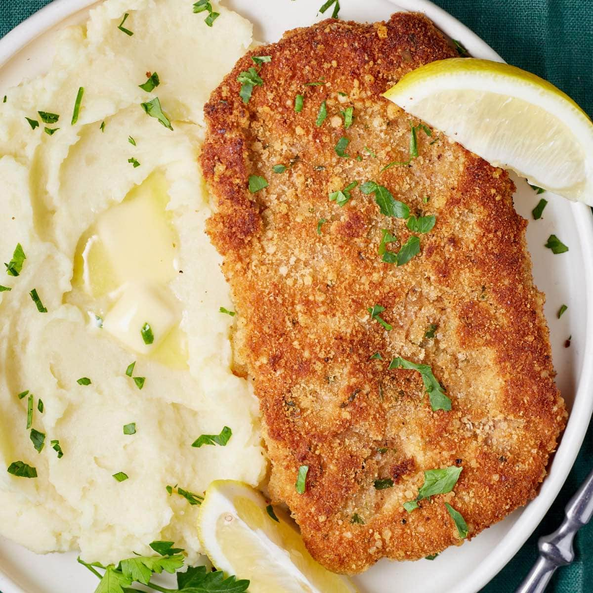
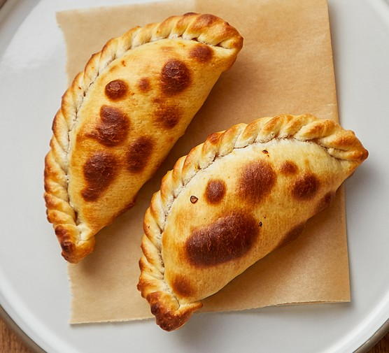
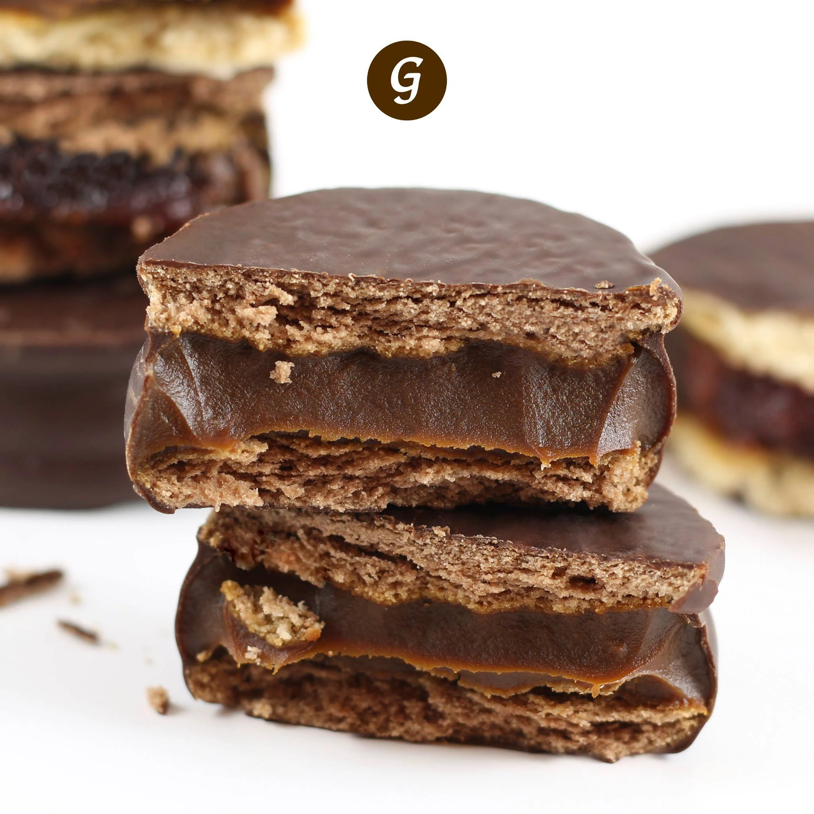

What has the Asado?
The asado is a way to prepare differents kinds of meat. It is cooked over a big grill with the rest of burnd coal under. The people that is preparing this dish has to be aware of the quantity of coal put under the meat, there is where the techniques and the experience involves. It is not a conventional grill. And all the meet is cooked in the same grill but each has different quantity of coal under.
Milanesa
What is the milanesa?
A milanesa consists of a thin slice of beef, chicken, fish, veal, or sometimes pork. Each slice is dipped into beaten eggs, seasoned with salt, and other condiments according to the cook's taste (such as parsley and garlic). Each slice is then dipped in bread crumbs (or occasionally flour) and shallow-fried in oil, one at a time. Some people prefer to use very little oil and then bake them in the oven as a healthier alternative.

Empanadas
What are the empanadas?
An empanada is a type of baked or fried turnover consisting of pastry and filling. They are made by folding dough over a filling, which may consist of meat, cheese, tomato, corn, or other ingredients, and then cooking the resulting turnover, either by baking or frying.

Alfajores
What are the empanadas?
Made with two delicate, melt-in-your-mouth cookies embracing a luscious dollop of creamy dulce de leche caramel.

.jpg)